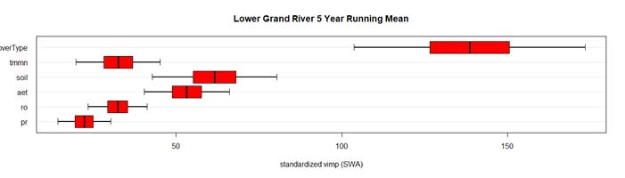
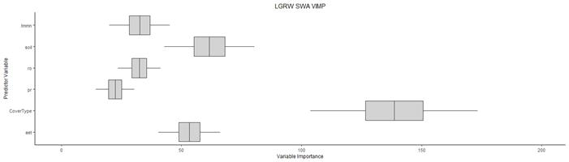
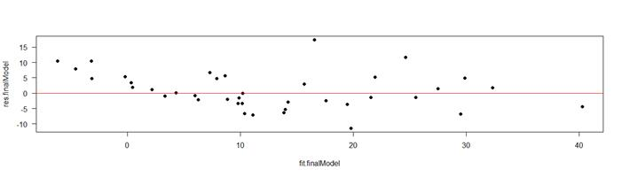

Zack Loken
2022-04-29
Zack Loken - OCS 7131 Assignment 6
### Run multiple linear regression on most important
climate variables, S.W.A, and waterfowl occurrence data in R to see which are
best predictors of average S.W.A.
#===========================================================================#
# Filter eBird Data #
#===========================================================================#
# Load packages
library(auk)
# Set AWK path (only necessary for Windows OS) - for your laptop
auk::auk_set_awk_path("C:/cygwin64/bin/gawk.exe/bin/gawk.exe",
overwrite=TRUE)
# Set AWK path (only necessary for Windows OS) - for your desktop
#auk::auk_set_awk_path("C:/cygwin64/bin/gawk.exe",
#overwrite=TRUE)
# set EBD data directory
auk::auk_set_ebd_path("E:/Zack/School/Classes/Spring
22/OCS 7131 - Data Analysis in R/Lecture/Assignments/Assignment 6/", overwrite = TRUE)
# path to the ebird data file
f_in <- "E:/Zack/School/Classes/Spring
22/OCS 7131 - Data Analysis in R/Lecture/Assignments/Assignment
6/ebd_US-MO_198401_202012_relFeb-2022.txt"
# output text file
f_out <- "ebd_filtered_MOducks.txt"
eBird_data <- f_in %>%
# 1. reference file
auk_ebd() %>%
# 2. define filters
auk_species(species = c("Dendrocygna autumnalis", "Dendrocygna
bicolor",
"Anser
caerulescens", "Anser
rossii", "Anser
albifrons",
"Branta
hutchinsii", "Branta
canadensis", "Cygnus
buccinator",
"Cygnus
columbianus", "Aix
sponsa", "Spatula
discors",
"Spatula
cyanoptera", "Spatula
clypeata", "Mareca
strepera",
"Mareca
americana", "Anas
platyrhynchos", "Anas
rubripes",
"Anas
acuta", "Anas
crecca", "Aythya
valisineria",
"Aythya
americana", "Aythya
collaris", "Aythya
marila",
"Aythya
affinis", "Melanitta
perspicillata", "Melanitta
deglandi",
"Melanitta
americana", "Clangula
hyemalis", "Bucephala
albeola",
"Bucephala
clangula", "Lophodytes
cucullatus", "Mergus
merganser",
"Mergus
serrator", "Oxyura
jamaicensis")) %>%
auk_state(state = "US-MO") %>%
auk_date(date = c("*-10-01", "*-12-31")) %>%
# 3. run filtering
auk::auk_filter(file = f_out, overwrite
= TRUE) %>%
# 4. read text file into r data frame
read_ebd()
#===========================================================================#
#
eBird Data Clean-up #
#===========================================================================#
# Load packages
library(tmap)
library(tidyverse)
library(sp)
library(sf)
library(rgdal)
library(raster)
library(lwgeom)
library(lubridate)
# Subset the eBird dataset to include only relevant columns
eBird_data_sub <- eBird_data[c("common_name", "scientific_name", "observation_count", "state", "county", "latitude", "longitude", "observation_date")]
# Create new column containing only year from date
as.Date(eBird_data_sub$observation_date, format
= "%Y-%m-%d", "%Y")
eBird_data_sub$Year <- as.numeric(format(eBird_data_sub$observation_date, "%Y"))
# export r data frame to csv file
write.csv(eBird_data_sub,
file = "E:/Zack/School/Classes/Spring 22/OCS 7131 -
Data Analysis in R/Lecture/Assignments/Assignment
6/ebd_filtered_MOducks.csv",
row.names
= TRUE)
# Load in your shapefiles (LGRW boundary, cover types, and eBird
observations) as sf objects
LGRW_bndry.shp <- st_read("E:/Zack/School/Classes/Spring
22/OCS 7131 - Data Analysis in R/Lab/Lab 5/LGRW_StudyArea_bndry.shp")
LGRW_covertypes.shp <- st_read("E:/Zack/School/Classes/Spring
22/OCS 7131 - Data Analysis in R/Lab/Lab 5/NLCD_LGRW_StudyArea.shp")
LGRW_eBird.shp <- st_read("E:/Zack/School/Classes/Spring
22/OCS 7131 - Data Analysis in R/Lecture/Assignments/Assignment
6/ebd_filtered_LGRWducks.shp")
# Double check the classes to make sure they all look good
class(LGRW_bndry.shp)
class(LGRW_covertypes.shp)
class(LGRW_eBird.shp)
# Check projection of all spatial objects
crs(LGRW_bndry.shp)
crs(LGRW_covertypes.shp)
crs(LGRW_eBird.shp)
# Reproject eBird data projection to match boundary and covertypes
projections
LGRW_eBird_3857.shp <- st_transform(LGRW_eBird.shp, crs
= 3857)
# Check that shapefiles plot correctly
tmap_mode("plot")
# LGRW boundary map check
map_LGRW_bndry.shp <- tm_shape(LGRW_bndry.shp) +
tm_borders(col = "black")
map_LGRW_bndry.shp
# LGRW cover types map check
map_LGRW_covertypes.shp <- tm_shape(LGRW_covertypes.shp) +
tm_fill(col = "CoverType", title = "Habitat Type") +
map_LGRW_bndry.shp
map_LGRW_covertypes.shp
# LGRW eBird observation points map check
map_LGRW_eBird_3857.shp <- map_LGRW_covertypes.shp +
tm_shape(LGRW_eBird_3857.shp) +
tm_bubbles(col = "white", size = 0.15, border.col = "black", title.col = "Waterfowl
Observation") +
tm_layout(main.title = "Waterfowl Distribution
by Habitat Type",
main.title.position
= "center",
main.title.size
= 1,
legend.position
= c("left", "bottom", legend.is.portrait = FALSE)) +
tm_compass(position = c("right", "top"),
color.light
= "grey80")
map_LGRW_eBird_3857.shp
#===========================================================================#
# Surface
Water Area Data Tidying
#
#===========================================================================#
# Load packages
library(data.table)
# Read in your surface water area (SWA) csv
LGRW_SWA <- read.csv("E:/Zack/School/Classes/Spring
22/OCS 7131 - Data Analysis in R/Lecture/Assignments/Assignment
6/LGRW_WetHectares_byYear.csv")
# Quick cleanup - rename the column headers
setnames(LGRW_SWA,
skip_absent = TRUE,
old
= c('CoverType', 'Owner', 'Hectares', 'X1984_SWA', 'X1987_SWA', 'X1989_SWA', 'X1990_SWA',
'X1991_SWA', 'X1992_SWA', 'X1994_SWA', 'X1996_SWA', 'X1997_SWA', 'X1999_SWA', 'X2001_SWA',
'X2004_SWA', 'X2005_SWA', 'X2006_SWA', 'X2010_SWA', 'X2011_SWA', 'X2014_SWA', 'X2015_SWA',
'X2016_SWA', 'X2018_SWA', 'X2019_SWA', 'X2020_SWA'),
new
= c('Cover_Type', 'Owner', 'Hectares', '1984', '1987', '1989', '1990', '1991', '1992', '1994',
'1996', '1997', '1999', '2001', '2004', '2005', '2006', '2010', '2011', '2014', '2015',
'2016', '2018','2019', '2020'))
# Convert wide data frame to narrow format w/ one column containing
year
narrow.LGRW_SWA <- pivot_longer(data = LGRW_SWA,
cols
= c(4:25),
names_to
= "Year",
values_to
= "SWA_Hectares")
# Remove 'Hectares' column from narrow.LGRW_SWA data frame (This column
is polygon size)
narrow.LGRW_SWA <- subset(narrow.LGRW_SWA, select
= -Hectares)
# Group by cover type, then summarize the total surface water area of
each cover type for each year.
LGRW_SWA_Sum <- narrow.LGRW_SWA %>%
group_by(Cover_Type, Year) %>%
summarise(SWA_sum = sum(SWA_Hectares), n = n())
# Change all 'Forest - Riprarian' values to 'Forest - Riparian'
LGRW_SWA_Sum$Cover_Type[67:88] <- "Forest -
Riparian"
LGRW_covertypes.shp$CoverType <- replace(LGRW_covertypes.shp$CoverType, LGRW_covertypes.shp$CoverType == "Forest -
Riprarian", "Forest
- Riparian")
# Calculate mean annual swa by covertype class (swa in hectares)
LGRW_SWA_Sum$SWA_avg <- (LGRW_SWA_Sum$SWA_sum/LGRW_SWA_Sum$n)
#===========================================================================#
# Merge all
datasets into one database
#
#===========================================================================#
# Combine CoverType, SWA, eBird data, and TerraClim into one dataframe.
# Spatial join w/ CoverType and eBird data
LGRW_eBird_CoverType_sj.shp <- st_join(LGRW_eBird_3857.shp,
LGRW_covertypes.shp[c("OWN", "CoverType")], left
= FALSE)
# Join again with TerraClim data
LGRW_TerraClim <- read.csv("E:/Zack/School/Classes/Spring
22/OCS 7131 - Data Analysis in R/Lecture/Assignments/Assignment 6/TerraClim_OctNovDec_LGRW.csv")
LGRW_eBird_CoverType_Terraclim.shp
<- merge(x = LGRW_eBird_CoverType_sj.shp, y = LGRW_TerraClim, by.x
= "Year", by.y = "year", all.x = TRUE)
# Join one last time with SWA data
LGRW_SWA_Sum$UniqueID <- paste(LGRW_SWA_Sum$Cover_Type, LGRW_SWA_Sum$Year) #
create unique ID w/ covertype and year
LGRW_eBird_CoverType_Terraclim.shp$UniqueID <- paste(LGRW_eBird_CoverType_Terraclim.shp$CoverType,
LGRW_eBird_CoverType_Terraclim.shp$Year) # to
merge into final df
LGRW_all <- merge(x = LGRW_eBird_CoverType_Terraclim.shp, y = LGRW_SWA_Sum, by
= "UniqueID", all.x = TRUE) # keep all rows in x
# Remove duplicate and unnecessary columns
LGRW_all <- subset(LGRW_all, select
= c(-Field1, -Date, -Cover_Type, -Year.y))
# Quick cleanup - rename the column headers
setnames(LGRW_all,
skip_absent = TRUE,
old
= c('UniqueID', 'Year.x', 'common_nam', 'scientific', 'observatio', 'state', 'county',
'latitude', 'longitude', 'observat_1', 'OWN', 'CoverType', 'aet_mm', 'def_mm',
'pet_mm', 'pr_mm', 'ro_mm', 'soil_mm', 'swe_mm', 'vs_m.s', 'tmmn_cels', 'tmmx_cels',
'SWA_sum', 'n', 'SWA_avg', 'geometry'),
new
= c('UniqueID', 'Year', 'CommonName', 'ScientificName', 'Count_bySpp', 'State', 'County',
'Latitude', 'Longitude', 'DateSppObserved', 'Ownership', 'CoverType', 'aet_mm', 'def_mm',
'pet_mm', 'pr_mm', 'ro_mm', 'soil_mm', 'swe_mm', 'vs_m.s', 'tmmn_cels', 'tmmx_cels',
'SWA_sum', 'CoverType_ParcelCount', 'SWA_avg', 'geometry'))
LGRW_all$Count_bySpp <- as.numeric(LGRW_all$Count_bySpp) #
character to numeric
LGRW_all$CoverType <- as.factor(LGRW_all$CoverType) #
character to factor
#===========================================================================#
# randomForest
Analysis of All Data - Variable Importance #
#===========================================================================#
# randomForest analysis of multivariate data using randomForestSRC
# Consolidated from previous scripts by J. Moore & P. Donnelly of
U. Montana
# Set working directory to folder with files to use
setwd("E:/Zack/School/Classes/Spring
22/OCS 7131 - Data Analysis in R/Lecture/Assignments/Assignment 6/")
# Load packages
library(randomForestSRC)
library(ggRandomForests)
library(gridExtra)
library(zoo)
# Select variables you want to use randomForestSRC on.
# Calc running means: Using running means over several years often
filters out some of the short-term variability.
# Produce file with run mean of selected variables that will be used in
the ranFor analysis.
# Change running mean years here before run--default is one year, which
will consolidate seasonal data:
ny = 5 #
Number of years over which to calculate the running mean.
rmLGRW <- LGRW_all %>%
transmute(
CoverType = CoverType,
Year = Year,
SppName = CommonName,
Count_bySpp = rollapplyr(Count_bySpp, ny, mean, partial = TRUE),
SWA = rollapplyr(SWA_avg, ny, mean, partial = TRUE),
aet = rollapplyr(aet_mm, ny, mean, partial = TRUE),
def = rollapplyr(def_mm, ny, mean, partial = TRUE),
pet = rollapplyr(pet_mm, ny, mean, partial = TRUE),
pr = rollapplyr(pr_mm, ny, mean, partial = TRUE),
ro = rollapplyr(ro_mm, ny, mean, partial = TRUE),
soil = rollapplyr(soil_mm, ny, mean, partial = TRUE),
#swe = rollapplyr(swe_mm, ny, mean, partial = TRUE),
vs = rollapplyr(vs_m.s, ny, mean, partial = TRUE),
tmmn = rollapplyr(tmmn_cels, ny, mean, partial = TRUE),
tmmx = rollapplyr(tmmx_cels, ny, mean, partial = TRUE)
) #%>%na.omit()
# Remove NAs if you want, but randomForest will tolerate missing data.
# First set of data for ranFor: only use the variables you want and put
the outcome (dependent)
# variable in the first column.
This is required for randomForestSRC or randomForest.
# The file also must be a
dataframe, not a tibble.
SWArfLGRW <- rmLGRW %>%
dplyr::select(SWA, pr, ro, aet, soil, tmmn, CoverType)
%>%
data.frame()
# Drop geometry column
SWArfLGRW <- subset(SWArfLGRW, select
= -geometry)
# Running randomForestSRC--can change number of trees w/ ntree=n:
src_SWA_LGRW <- rfsrc(SWA ~ ., data
= SWArfLGRW, importance
= TRUE, ntree = 5000, do.trace = TRUE) # Change your response
variable here
##
## Trees Grown: 1,
Time Remaining (sec): 0
# Using basic ggrandomForest plot routines for bar
plots--will modify below
# Calc and plot CI for vimp--change number of bootstraps with B=n:
r_src_SWA_LGRW <- subsample(src_SWA_LGRW, B = 500)
# This can take a few minutes depending on dataset
size.
## | | | 0% | | | 1% | |= | 1% | |= | 2% | |== | 2% | |== | 3% | |=== | 4% | |=== | 5% | |==== | 5% | |==== | 6% | |===== | 7% | |===== | 8% | |====== | 8% | |====== | 9% | |======= | 9% | |======= | 10% | |======= | 11% | |======== | 11% | |======== | 12% | |========= | 12% | |========= | 13% | |========== | 14% | |========== | 15% | |=========== | 15% | |=========== | 16% | |============ | 17% | |============ | 18% | |============= | 18% | |============= | 19% | |============== | 19% | |============== | 20% | |============== | 21% | |=============== | 21% | |=============== | 22% | |================ | 22% | |================ | 23% | |================= | 24% | |================= | 25% | |================== | 25% | |================== | 26% | |=================== | 27% | |=================== | 28% | |==================== | 28% | |==================== | 29% | |===================== | 29% | |===================== | 30% | |===================== | 31% | |====================== | 31% | |====================== | 32% | |======================= | 32% | |======================= | 33% | |======================== | 34% | |======================== | 35% | |========================= | 35% | |========================= | 36% | |========================== | 37% | |========================== | 38% | |=========================== | 38% | |=========================== | 39% | |============================ | 39% | |============================ | 40% | |============================ | 41% | |============================= | 41% | |============================= | 42% | |============================== | 42% | |============================== | 43% | |=============================== | 44% | |=============================== | 45% | |================================ | 45% | |================================ | 46% | |================================= | 47% | |================================= | 48% | |================================== | 48% | |================================== | 49% | |=================================== | 49% | |=================================== | 50% | |=================================== | 51% | |==================================== | 51% | |==================================== | 52% | |===================================== | 52% | |===================================== | 53% | |====================================== | 54% | |====================================== | 55% | |======================================= | 55% | |======================================= | 56% | |======================================== | 57% | |======================================== | 58% | |========================================= | 58% | |========================================= | 59% | |========================================== | 59% | |========================================== | 60% | |========================================== | 61% | |=========================================== | 61% | |=========================================== | 62% | |============================================ | 62% | |============================================ | 63% | |============================================= | 64% | |============================================= | 65% | |============================================== | 65% | |============================================== | 66% | |=============================================== | 67% | |=============================================== | 68% | |================================================ | 68% | |================================================ | 69% | |================================================= | 69% | |================================================= | 70% | |================================================= | 71% | |================================================== | 71% | |================================================== | 72% | |=================================================== | 72% | |=================================================== | 73% | |==================================================== | 74% | |==================================================== | 75% | |===================================================== | 75% | |===================================================== | 76% | |====================================================== | 77% | |====================================================== | 78% | |======================================================= | 78% | |======================================================= | 79% | |======================================================== | 79% | |======================================================== | 80% | |======================================================== | 81% | |========================================================= | 81% | |========================================================= | 82% | |========================================================== | 82% | |========================================================== | 83% | |=========================================================== | 84% | |=========================================================== | 85% | |============================================================ | 85% | |============================================================ | 86% | |============================================================= | 87% | |============================================================= | 88% | |============================================================== | 88% | |============================================================== | 89% | |=============================================================== | 89% | |=============================================================== | 90% | |=============================================================== | 91% | |================================================================ | 91% | |================================================================ | 92% | |================================================================= | 92% | |================================================================= | 93% | |================================================================== | 94% | |================================================================== | 95% | |=================================================================== | 95% | |=================================================================== | 96% | |==================================================================== | 97% | |==================================================================== | 98% | |===================================================================== | 98% | |===================================================================== | 99% | |======================================================================| 99% | |======================================================================| 100%
#par(mfrow=c(1,1))
# Set par if you want multiple plots arranged on page or save and use
grid.
plot.subsample(r_src_SWA_LGRW, alpha = .05, main = paste0("Lower Grand River
", ny, "
Year Running Mean"))

# Extracting results for ggplot boxplots so can
manipulate components
summary_CI_SWA_LGRW <- extract.subsample(r_src_SWA_LGRW) # 95%
CI
# Selecting data to use for boxplot from summary data: $ci.jk.Z
# Data equivalent to the
plot.subsample plots above.
# Changing row names because
they cause problems. Then gathering around rowname and spreading to
# get data with each part of
boxplot as a column.
# Extract data for plotting boxplots from summary_CI above
row.names(summary_CI_SWA_LGRW$ci.jk.Z) <- c("min","low","mid","up","max") #
This picks the data for the box and whiskers.
bxp_dat_SWA_LGRW <- summary_CI_SWA_LGRW$ci.jk.Z %>%
data.frame() %>%
rownames_to_column() %>%
gather(var, value, -rowname) %>%
spread(rowname, value) %>%
mutate(var = factor(var, levels = c("aet","CoverType", "pr", "ro", "soil", "tmmn"))) %>%
dplyr::arrange(match(var, c("aet","Count_bySpp", "pr", "ro", "soil", "tmmn"))) # Set order for the axis
here
# Boxplot in ggplot--modify as want.
bpSWA1 <- ggplot(bxp_dat_SWA_LGRW, aes(x = var, lower
= low, upper
= up, middle
= mid, ymin
= min, ymax
= max))+
geom_boxplot(stat = "identity", fill = 'light gray', lwd = .2) +
coord_flip() + #
Flips axes so horizontal boxes; if want vertical comment this line out.
ylim(-1, 200) + # Set
this for bottom axis length/ticks, or comment out for default.
theme_classic() +
ylab("Variable Importance") +
xlab("Predictor Variable") +
ggtitle("LGRW SWA VIMP") + # Add
title if want.
theme(axis.title.y = element_text(size = 9),
axis.title.x = element_text(size = 9),
axis.text = element_text(size = 8),
plot.title = element_text(size = 11, hjust = 0.5))
bpSWA1

ggsave(file = "bpSWA1.jpg", bpSWA1, width = 9, height = 10, units = "cm", dpi = 600) # save boxplot.
#===========================================================================#
# The
Data Analysis Portion
#
#===========================================================================#
# Based on the randomForest results, the most important variables are
tmmn_cels, soil_mm, ro_mm, aet_mm, pr_mm, count_bySpp and CoverType.
# These will be the seven predictor variables used in lm, with SWA as
the response.
# Load packages
library(ggplot2)
library(olsrr)
library(lme4)
# Remove NAs
LGRW_all$Count_bySpp <- replace(LGRW_all$Count_bySpp, is.na(LGRW_all$Count_bySpp), 1)
LGRW_all.omit <- na.omit(LGRW_all)
# AIC variable selection
---------------------------------------------------
# Best subsets regression using AIC -- lowest AIC is best model
AIC.bsr <- lm(SWA_avg ~ Count_bySpp + CoverType + aet_mm + pr_mm + ro_mm + soil_mm + tmmn_cels,
data
= LGRW_all.omit)
AIC.bsr.fit.aic <- ols_step_best_subset(AIC.bsr)
AIC.bsr.fit.aic
## Best Subsets
Regression
##
-------------------------------------------------------------------------
## Model Index Predictors
##
-------------------------------------------------------------------------
## 1
CoverType
## 2
CoverType aet_mm
## 3
CoverType aet_mm tmmn_cels
## 4
CoverType aet_mm ro_mm tmmn_cels
## 5
CoverType aet_mm pr_mm ro_mm tmmn_cels
## 6
CoverType aet_mm pr_mm ro_mm soil_mm tmmn_cels
## 7
Count_bySpp CoverType aet_mm pr_mm ro_mm soil_mm tmmn_cels
## -------------------------------------------------------------------------
##
##
Subsets Regression Summary
##
-----------------------------------------------------------------------------------------------------------------------------------------
## Adj. Pred
## Model R-Square
R-Square R-Square C(p) AIC SBIC SBC MSEP FPE HSP
APC
##
-----------------------------------------------------------------------------------------------------------------------------------------
## 1
0.5625 0.5586 0.5585
638.7962 4054.9191 2406.8198
4085.4240 37300.5536 65.3242
0.1134 0.4406
## 2
0.6806 0.6772 0.6752
313.6577 3875.3613 2227.5778
3910.2241 27278.3585
47.8553 0.0831 0.3228
## 3
0.7706 0.7678 0.7648
66.2538 3686.2727 2040.0672
3725.4933 19622.2530 34.4836
0.0599 0.2326
## 4
0.7830 0.7799 0.7766
34.0846 3656.3710 2010.5120
3699.9494 18599.3207 32.7425
0.0568 0.2208
## 5
0.7946 0.7913 0.7877 3.9767
3626.6959 1981.4096 3674.6321
17636.6959 31.1015 0.0540
0.2098
## 6
0.7959 0.7923 0.7886 2.1444
3624.7964 1979.6341 3677.0905
17548.6923 30.9997 0.0538
0.2091
## 7
0.7960 0.7920 0.782 4.0000
3626.6489 1981.5328 3683.3009
17575.0961 31.0998 0.0540
0.2097
## -----------------------------------------------------------------------------------------------------------------------------------------
## AIC: Akaike Information
Criteria
##
SBIC: Sawa's Bayesian Information Criteria
##
SBC: Schwarz Bayesian Criteria
##
MSEP: Estimated error of prediction, assuming multivariate normality
##
FPE: Final Prediction Error
##
HSP: Hocking's Sp
##
APC: Amemiya Prediction Criteria
# According to best subsets regression, best model
includes 6 variables: CoverType, aet_mm, pr_mm, ro_mm, soil_mm, and tmmn_cels
finalModel <- lm(SWA_avg ~ CoverType + aet_mm + pr_mm + ro_mm + soil_mm + tmmn_cels,
data
= LGRW_all.omit)
summary(finalModel)
##
## Call:
## lm(formula = SWA_avg ~
CoverType + aet_mm + pr_mm + ro_mm + soil_mm +
## tmmn_cels, data = LGRW_all.omit)
##
## Residuals:
## Min
1Q Median 3Q
Max
## -11.434 -2.926
-2.038 4.809 17.403
##
## Coefficients:
## Estimate Std.
Error t value Pr(>|t|)
## (Intercept) -15.344706 2.233524
-6.870 1.70e-11 ***
## CoverTypeForest - Riparian -3.629988
1.078431 -3.366 0.000814 ***
## CoverTypeGrassland -14.453487 2.300878
-6.282 6.68e-10 ***
## CoverTypeLevee -13.509068 1.049341 -12.874 < 2e-16 ***
## CoverTypeWet Meadow 7.704455 1.023052
7.531 2.00e-13 ***
## CoverTypeWetland 15.657402 0.669438
23.389 < 2e-16 ***
## aet_mm 0.311888 0.017506
17.816 < 2e-16 ***
## pr_mm -0.057581 0.009598
-5.999 3.53e-09 ***
## ro_mm 0.089235 0.012791
6.976 8.49e-12 ***
## soil_mm 0.013811 0.007050
1.959 0.050591 .
## tmmn_cels -3.831444 0.277242 -13.820 < 2e-16 ***
## ---
## Signif. codes: 0 '***' 0.001 '**' 0.01 '*' 0.05 '.' 0.1 ' '
1
##
## Residual standard error: 5.534
on 566 degrees of freedom
## Multiple R-squared: 0.7959, Adjusted R-squared: 0.7923
## F-statistic: 220.8 on 10 and
566 DF, p-value: < 2.2e-16
coef(finalModel)
## (Intercept) CoverTypeForest -
Riparian
## -15.34470615 -3.62998789
## CoverTypeGrassland CoverTypeLevee
## -14.45348697 -13.50906752
## CoverTypeWet Meadow CoverTypeWetland
## 7.70445531 15.65740244
## aet_mm pr_mm
## 0.31188770 -0.05758144
## ro_mm soil_mm
## 0.08923531 0.01381100
## tmmn_cels
## -3.83144400
confint(finalModel)
## 2.5 % 97.5 %
## (Intercept) -1.973171e+01 -10.95769943
## CoverTypeForest - Riparian
-5.748203e+00 -1.51177320
## CoverTypeGrassland -1.897279e+01 -9.93418541
## CoverTypeLevee -1.557015e+01 -11.44798935
## CoverTypeWet Meadow 5.695012e+00 9.71389824
## CoverTypeWetland 1.434252e+01 16.97228817
## aet_mm 2.775036e-01 0.34627179
## pr_mm -7.643313e-02 -0.03872976
## ro_mm 6.411168e-02 0.11435894
## soil_mm -3.564114e-05 0.02765764
## tmmn_cels -4.375992e+00 -3.28689596
# Calculate the error rate by diving the RSE (sigma)
by the mean response variable
sigma(finalModel)/mean(LGRW_all.omit$SWA_avg)
## [1] 0.325575
#===========================================================================#
# The
Data Visualization Portion
#
#===========================================================================#
# Plot the residuals as a function of the fitted data.
res.finalModel <- resid(finalModel)
hist(res.finalModel,
breaks = 10, las = 1, col = 1, border = "white", xlab = "Residual", main = '')

fit.finalModel <- fitted(finalModel)
plot(res.finalModel
~ fit.finalModel, pch = 19, las = 1); abline(0, 0, col = "red")

## Think of some good figures to include!!!!!!! +++++++ !!!!!! ***** &&&&&&&&&